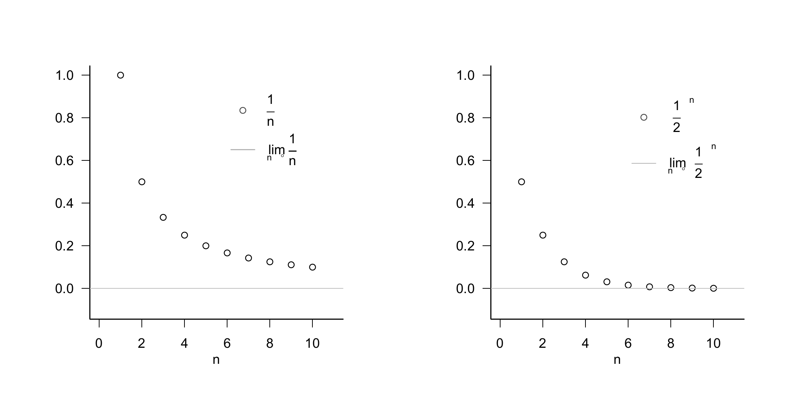
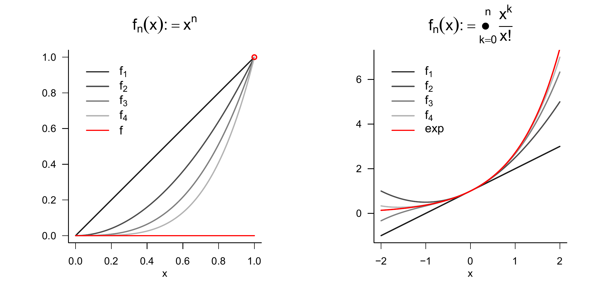
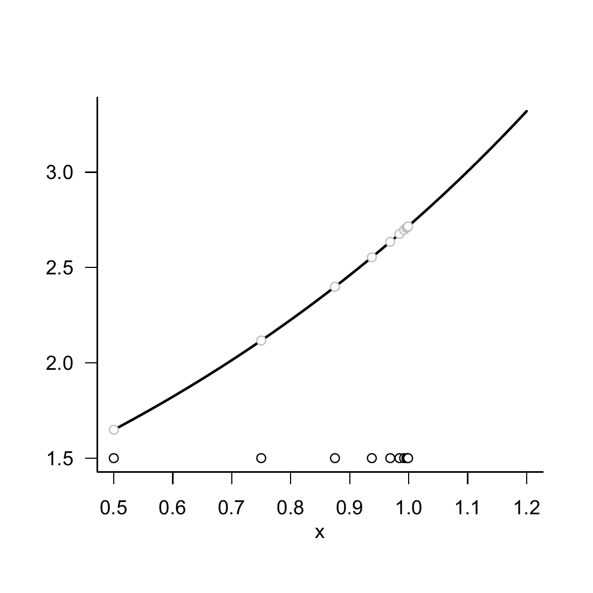

5 Sequences, limits, continuity
The topics treated in this chapter are not central to probabilistic data science but form basic building blocks of real analysis. Because modern probability theory is closely intertwined with analytic approaches, however, they help us understand certain results of probability theory. One example of such a result is the central limit theorem. The central limit theorem, in turn, forms the basis for the widely used normal-distribution assumption in probabilistic data science. The foundations considered here therefore indirectly increase our understanding of data-scientific principles. In brief, the central limit theorem is a statement about the limit function of a sequence of functions, more precisely about a sequence of random variables. Knowledge of the nature of sequences, sequences of functions, and their limits therefore allows an informed entry into the study of the central limit theorem. Furthermore, the topics treated in this chapter provide at least a first entry point for understanding continuity and smoothness of functions, which are important basic concepts in nonlinear optimization, for example when determining parameter estimators of probabilistic models.
5.1 Sequences
We begin with the definition of the concept of a real sequence.
Definition 5.1 (Real sequence) A real sequence is a function of the form \[\begin{equation} f:\mathbb{N} \to \mathbb{R}, n \mapsto f(n). \end{equation}\] The function values \(f(n)\) of a real sequence are usually denoted by \(x_n\) and called sequence terms. Common notations for sequences are \[\begin{equation} (x_1,x_2,...) \mbox{ or } (x_n)_{n=1}^\infty \mbox{ or } (x_n)_{n\in \mathbb{N}} \mbox{ or } (x_n). \end{equation}\]
Note that a real sequence, because there are infinitely many natural numbers, always has infinitely many sequence terms. This should be kept in mind especially when using the notation \((x_1,x_2,...)\). We consider two standard examples of real sequences.
Examples of Real Sequences
Real sequences of the form \[\begin{equation} f:\mathbb{N} \to \mathbb{R}, n \mapsto f(n) := \left(\frac{1}{n}\right)^{\frac{p}{q}} \mbox{ with } p,q\in \mathbb{N} \end{equation}\] are called harmonic sequences. For \(p := q := 1\), a harmonic sequence has the sequence-term form \[\begin{equation} \left(\frac{1}{1}, \frac{1}{2}, \frac{1}{3}, ...\right). \end{equation}\]
Real sequences of the form \[\begin{equation} f:\mathbb{N} \to \mathbb{R}, n \mapsto f(n) := q^n \mbox{ with } q \in ]-1,1[ \end{equation}\] are called geometric sequences. For \(q := \frac{1}{2}\), a geometric sequence has the sequence-term form \[\begin{align} \begin{split} \left(\left(\frac{1}{2}\right)^1,\left(\frac{1}{2}\right)^2,\left(\frac{1}{2}\right)^3, ...\right) & = \left(\frac{1^1}{2^1},\frac{1^2}{2^2},\frac{1^3}{2^3}, ...\right) \\ & = \left(\frac{1}{2},\frac{1}{4},\frac{1}{8}, ...\right). \end{split} \end{align}\]
In addition to real sequences, that is, sequences of real numbers, one can also consider sequences of other mathematical objects. An important type of sequence is the sequence of functions.
Definition 5.2 (Sequence of functions) Let \(\phi\) be a set of univariate real-valued functions with domain \(D \subseteq \mathbb{R}\). Then a sequence of functions is a function of the form \[\begin{equation} F: \mathbb{N} \to \phi, n \mapsto F(n). \end{equation}\] The function values \(F(n)\) of a sequence of functions are usually denoted by \(f_n\) and called sequence terms. Common notations for sequences of functions are \[\begin{equation} (f_1,f_2,...) \mbox{ or } (f_n)_{n=1}^\infty \mbox{ or } (f_n)_{n\in \mathbb{N}} \mbox{ or } (f_n). \end{equation}\]
The definition of a sequence of functions is evidently analogous to the definition of a real sequence. The difference between a real sequence and a sequence of functions is that the sequence terms of a real sequence are real numbers, whereas the sequence terms of a sequence of functions are univariate real-valued functions. Here, too, we discuss two standard examples.
Examples of Sequences of Functions
- We consider the set \(\phi\) of univariate real-valued functions of the form \[\begin{equation} \phi := \{f_n|f_n : [0,1] \to \mathbb{R}, x \mapsto f_n(x) := x^n \mbox{ for } n \in \mathbb{N}\}. \end{equation}\] Then \[\begin{equation} F : \mathbb{N} \to \phi, n\mapsto F(n) := f_n \end{equation}\] defines a sequence of functions. For the function values of the sequence terms of \(F\), we have \[\begin{equation} f_1(x) := x^1, f_2(x) := x^2, f_3(x) := x^3, ... \end{equation}\]
- We consider the set \(\phi\) of univariate real-valued functions of the form \[\begin{equation} \phi := \{f_n|f_n : [-a,a] \to \mathbb{R}, x \mapsto f_n(x) := \sum_{k=0}^n \frac{x^k}{k!} \mbox{ for } n \in \mathbb{N}\}. \end{equation}\] Then \[\begin{equation} F : \mathbb{N} \to \phi, n\mapsto F(n) := f_n \end{equation}\] defines a sequence of functions. For the function values of the sequence terms of \(F\), we have \[\begin{equation} f_1(x) := \sum_{k=0}^1 \frac{x^k}{k!}, f_2(x) := \sum_{k=0}^2 \frac{x^k}{k!}, f_3(x) := \sum_{k=0}^3 \frac{x^k}{k!}, ... \end{equation}\]
5.2 Limits
When considering the terms of a sequence, one can ask which values a sequence might take when the sequence index \(n\) becomes very large, that is, tends to infinity. If, in this case, the sequence terms take very similar values (and do not themselves become infinitely large), one is led to the concept of a limit for real sequences and a limit function for sequences of functions.
Definition 5.3 (Limit of a real sequence) \(x \in \mathbb{R}\) is called the limit of a real sequence \((x_n)_{n=1}^\infty\) if, for every \(\epsilon>0\), there exists an \(m \in \mathbb{N}\) such that \[\begin{equation} |x_n - x| < \epsilon \mbox{ for all } n \ge m. \end{equation}\] A sequence that has a limit is called a convergent sequence; a sequence that has no limit is called a divergent sequence. To express that \(x \in \mathbb{R}\) is the limit of the sequence \((x_n)_{n=1}^\infty\), one also writes \[\begin{equation} \lim_{n \to \infty} x_n = x \mbox{ or } x_n \to x \mbox{ for } n \to \infty \mbox{ or } x_n\xrightarrow[]{n \to \infty} x. \end{equation}\]
According to Definition 5.3, the limit of a sequence may exist, but it need not. For example, the sequence \[\begin{equation} f : \mathbb{N} \to \mathbb{R}, n \mapsto f(n) := n \end{equation}\] has no limit, because here both \(n\) and \(f(n)\) become infinitely large. For a convergent sequence, that is, a sequence whose limit exists, Definition 5.3 says that, for an arbitrarily small but positive \(\epsilon\), an \(m \in \mathbb{N}\) can be specified such that, for all sequence terms \(x_n\) with \(n \ge m\), the distance from the limit in the positive or negative direction is smaller than \(\epsilon\). Thus the sequence terms with \(n \ge m\) lie arbitrarily close to the limit \(x\). It may often be the case that a smaller \(\epsilon\) requires a larger \(m\).
Examples
The examples of real sequences considered above, by contrast, have limits.
For the generalized harmonic sequences, with \(p,q \in \mathbb{N}\), \[ \lim_{n\to \infty} \left(\frac{1}{n}\right)^{\frac{p}{q}} = 0. \tag{5.1}\]
For the geometric sequences, with \(q \in ]-1,1[\), \[ \lim_{n\to \infty} q^n = 0. \tag{5.2}\]
The harmonic and geometric sequences are therefore also called null sequences. For general proofs of Equation 5.1 and Equation 5.2, we refer to the advanced literature. In fact, these proofs are not trivial and touch on the basic assumptions about the nature of the real numbers. In Figure 5.1, we visualize the first ten sequence terms as well as the limits of the harmonic sequence for \(p := q := 1\) and of the geometric sequence for \(q := 1/2\). The sequence terms shown as points evidently lie increasingly closer to the limit shown by a gray line as \(n\) increases.

For the special case of the harmonic sequence with \(p = q = 1\), we briefly present the argument for the limit \[ \lim_{n\to\infty} \frac{1}{n} = 0. \tag{5.3}\] According to Definition 5.3, Equation 5.3 holds if and only if, for an arbitrary \(\epsilon > 0\) (and in particular for an arbitrarily small one), an \(m \in \mathbb{N}\) can be specified such that, for all \(n \ge m\), \[ \left\lvert \frac{1}{n} - 0 \right\rvert < \epsilon \Leftrightarrow \frac{1}{n} < \epsilon. \] Thus, using the ceiling function \(\lceil \cdot \rceil\), if for an arbitrary \(\epsilon > 0\) we set \[ m := \left\lceil \frac{1}{\epsilon} \right\rceil + 1, \] for example, for \(\epsilon := 0.01\) correspondingly \(m := \left\lceil \frac{1}{0.01} \right\rceil + 1 = 101\), then for all \(n \ge m\) we have \(\frac{1}{n} < \epsilon\). Since \(\epsilon > 0\) was chosen arbitrarily, this construction is possible for all \(\epsilon > 0\).
For sequences of functions, one possible extension of the concepts of convergence and limit is the following.
Definition 5.4 (Pointwise convergence and limit function of a sequence of functions) Let \(F = (f_n)_{n\in \mathbb{N}}\) be a sequence of functions of univariate real-valued functions with domain \(D\). \(F\) is called pointwise convergent if the real sequence \(\left(f_n(x)\right)_{n\in \mathbb{N}}\) is a convergent sequence for every \(x \in D\), that is, if it has a limit. The function that assigns to each \(x \in D\) this limit of \(\left(f_n(x)\right)_{n\in \mathbb{N}}\) is then called the limit function of the sequence of functions \(F\) and has the form \[\begin{equation} f : D \to \mathbb{R}, x \mapsto f(x) := \lim_{n\to \infty}f_n(x). \end{equation}\]
Note that the limits of convergent real sequences are real numbers, whereas the limit functions of pointwise convergent sequences of functions are functions. In addition to pointwise convergence of sequences of functions, there is the more powerful concept of uniform convergence of sequences of functions, for which we refer to the advanced literature. As examples, we consider the limit functions of the sequences of functions discussed above; for proofs, we again refer to the advanced literature.
Examples
We consider the sequence of functions \[\begin{equation} F:\mathbb{N} \to \phi, n\mapsto F(n) \end{equation}\] with \[\begin{equation} \phi := \{f_n|f_n : [0,1] \to \mathbb{R}, x \mapsto f_n(x) := x^n \mbox{ for } n \in \mathbb{N}\}. \end{equation}\] Then \(F\) is pointwise convergent with limit function \[\begin{equation} f : [0,1] \to \mathbb{R}, x \mapsto f(x) := \begin{cases} 0, & \mbox{ for } x \in [0,1[ \\ 1, & \mbox{ for } x = 1 \\ \end{cases} \end{equation}\] because \(f_n(x) := x^n\) is a geometric sequence, and thus a null sequence, for \(x \in [0,1[\), while \(f_n(x) := x^n\) is a constant sequence for \(x = 1\), all of whose sequence terms have distance \(0\) from \(1\). The sequence of functions \(F\) therefore converges to a function that is equal to zero on the entire interval \([0,1]\), except at the point \(1\). This function evidently has a jump.
We consider the sequence of functions \[\begin{equation} F:\mathbb{N} \to \phi, n\mapsto F(n) \end{equation}\] with \[\begin{equation} \phi := \{f_n|f_n : [-a,a] \to \mathbb{R}, x \mapsto f_n(x) := \sum_{k=0}^n \frac{x^k}{k!} \mbox{ for } n \in \mathbb{N}\}. \end{equation}\] Then \(F\) is pointwise convergent with limit function \[\begin{equation} f : [-a,a] \to \mathbb{R}, x \mapsto f(x) := \sum_{k=0}^\infty \frac{x^k}{k!} =: \exp(x). \end{equation}\] The sequence of functions \(F\) therefore converges to the exponential function on \([-a,a]\). Conversely, the exponential function is defined precisely by \[\begin{equation} \exp(x) := \sum_{k=0}^\infty \frac{x^k}{k!}. \end{equation}\]

5.3 Continuity
In this section, we approach the concept of the continuity of a function. Intuitively, a function is continuous if it has no jumps or, equivalently, if small changes in its arguments always lead only to small changes in its function values (and therefore precisely to no jumps). To define continuity, we first need the concept of the limit of a function.
Definition 5.5 (Limit of a function)
For \(D\subseteq\mathbb{R}\) and \(Z\subseteq\mathbb{R}\), let \(f : D \to Z, x \mapsto f(x)\) be a function, and let \(a,b \in \mathbb{R}\). \(b\) is called the limit of the function \(f\) as \(x\) tends to \(a\) ifIf \(b\) is the limit of the function \(f\) as \(x\) tends to \(a\), one also writes \(\lim_{x \to a} f(x) = b\).
In Figure 5.3, we visualize the limit of the exponential function at \(a = 1\) by representing sequence terms \(x_n \to 1\) as points parallel to the x-axis and the corresponding sequence terms \(f(x_n)\) on the function graph. Evidently, \(\lim_{x\to 1}\exp(x) = e \approx 2.71\).

We can now define the concept of continuity of a function.
Definition 5.6 (Continuity of a function) A function \(f : D \to Z\) with \(D \subseteq \mathbb{R}\) and \(Z \subseteq \mathbb{R}\) is called continuous at \(a \in D\) if \[\begin{equation} \lim_{x\to a} f(x) = f(a). \end{equation}\] If \(f\) is continuous at every \(x \in D\), then \(f\) is continuous on \(D\).
Note that, for a function continuous at \(a\), it follows that \[\begin{equation} \lim_{x \to a} f(x) = f\left(\lim_{x\to a} x\right). \end{equation}\] For continuous functions, taking limits and evaluating the function can therefore be interchanged.